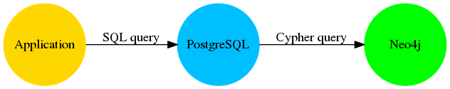

Neo4j et la BI
Benoit Simard (@logisima)
La business Intelligence
Definition
La BI désigne les moyens, les outils et les méthodes qui permettent de collecter, consolider, modéliser et restituer les données, en vue d’offrir une aide à la décision
Donner de la valeur à vos données
Mettre en relations les données
Nécessite un outil de stockage des données performant permettant de facilement les relier entre elles
Linked data
Les relations existant entre les données sont presques plus importantes que les données elles-mêmes
Compléxité des données
complexité = f(volumétrie, semi-structure, connectivité)

Les domaines de la BI
Collecte, consolidation et modélisation
Exploration des données
Analyse / Reporting
Collecte, consolidation et modélisation
Datamart
Les modèles en étoile sont des graphes !

Les avantages de Neo4j
Facilité de modélisation vos données liées
Base de données graphe
Sans schema
Performance au niveau des requêtes (jointures)
Le modèle relationnel
Le modèle en graphe
Importer vos données dans Neo4j
Extraire, transformer & charger vos données (ETL)
Exemple
MDM

Adidas utilise Neo4j pour créer leur référentiel interne, incluant les données sur les produits, les marchés, les médias sociaux, les actifs numériques, …

Wine Data System utilise Neo4j pour réconcilier les bases de données des négociants afin de construire un référenciel unique.
Explorer vos données
Via le browser

Il faut connaitre le langage de requête Cypher
Approche pour les techniques
Via des outils d’exploration
Développez vos dataviz
Analyser les données
Neo4j est interopérable
Accès au données via une API REST/JSON
Il existe forcément un driver pour vous
Les outils du marché
Ce sont des outils qui fonctionnent principalement sur des bases SQL (générateur de requêtes SQL).
SQL est partout

Tous les produits possèdent un connecteur SQL
Neo4j et le SQL
Foreign Data Wrapper est une manière standard de récupérer des objets distants en SQL
Spécification SQL depuis 2003
Dans postgresql dépuis 2011
Comment cela fonctionne ?

Exemple
Déclarer une table étrangère correspondante à une requête Cypher
Du SQL, du SQL !
Intégration avec Tableau
Démonstration : https://www.youtube.com/watch?v=Pkc748HmH9o
Merci !
GraphConnect Europe
20% de réduction avec le code NEWS20 !!!
Mardi 26 Avril, 2016, Queen Elizabeth II Centre, Londres
3 Thématiques + Lightning Talks
GraphClinics: Rencontrez nos experts
Networking
Formation, Lundi 25 Avril 2016, 9h30-17h30 : Fundamentals, Modelling, Neo4j in Production, Creating a Recommendation Engine
Des questions ?
Twitter: Suivez les comptes @neojFr & @neo4j
Google group : Avec les groupes Neo4jFr & Neo4j
Stackoverflow : avec les tags neo4j & cypher